王者荣耀
MOBA约 14,000 场
百星王者 · 巅峰赛约 2000 分
01 / THE PERSON BEHIND THE PAGE
HELLO, THIS IS TIANYU.
GAO TIANYU PERSONAL FILE
我把玩游戏时的投入，
也带进真实的工作里。
我是高天宇，2027 届河海大学硕士。长期体验 MOBA 和 FPS，也在研究与项目中处理数据、制作图表，和合作者一起参与 AI 数字服务的内容、社群与订单协作。比起只说自己“热爱”，我更喜欢把问题弄明白、把想法做出来，再检查它是否真的好用。
02 / PLAYER ARCHIVE
游戏让我看到更大的世界。
约 14,000 场
百星王者 · 巅峰赛约 2000 分
约 4,000 小时
达到大师段位
约 500 小时
长期体验开放世界与生存养成玩法
持续体验约 1—2 年
长期体验社交冒险品类
03 / DATA PRACTICE
把严谨的工程与建模经验，转化为业务数据的敏锐度。
DATA OPERATIONS · 复杂时序数据
在重大科研数据项目中，负责从海量离散原始观测文件到标准化交付成果的全链路整理。编写自动化 Python 批处理脚本，攻克多源异构格式转换与时空网格统一，建立双重异常质检与质量标识机制，并参与编制团队数据规范与现场验收交付。
一次交付，既有数据，也有说明。把处理结果与字段规范一起整理，让后续排查、分析与交接有据可循。
脚本与工具协同：借助 AI 工具协同起草和排查 Python 处理脚本，将实际业务数据与大模型网络隔离。在本地环境先用小样本样例验证处理逻辑无误后，再推进全量多源观测数据的批量清洗与格式转换。
应对格式规范更新：项目后期在北京现场驻场支持期间，面对验收方阶段性格式要求与字段变动，快速定位需要调整的批处理脚本节点，按新规范重新转换、校验数据并汇总图件，保障团队顺利通过验收交付。
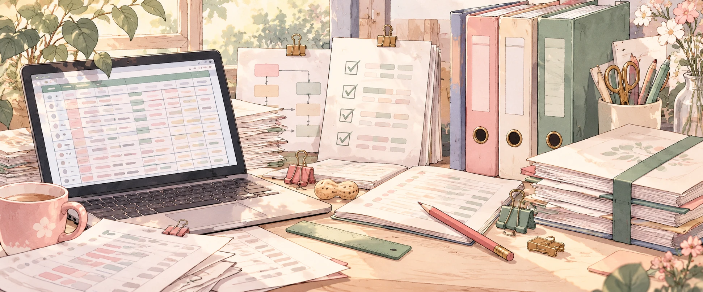
TREND & PREDICTION · 机器学习实战
围绕硕士课题《南海北部海洋热浪长期趋势演变研究》，对跨年度长周期多源连续时序数据开展时空统计与特征分析。本人独立完成随机森林与 XGBoost 模型的特征选择、超参数调优及交叉验证，严谨输出论文图表并复核关键统计结论。
一次分析，既重特征，也重闭环。把特征工程与模型验证做扎实，让业务与科学推论经得起反复推敲。
课题研究背景：论文研究围绕南海北部海洋热浪（MHW）的长期演变规律展开。面对多源多维时空网格资料，需要兼顾大时间跨度与区域特征，对多组特征变量开展相关性分析与降维筛选。
独立机器学习实操：在导师指导下由本人独立负责建模全流程，比对随机森林与 XGBoost 在极端事件特征捕捉中的表现；通过严格的 K 折交叉验证与评估指标检验，防范过拟合，并将结果整理为学术论文图表。
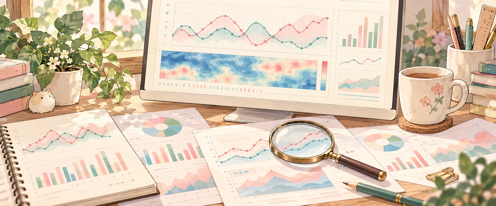
04 / USER & CONTENT
和合作者共同参与 AI 数字服务项目。
自 2026 年 5 月起，我与合作者共同运营 AI 数字服务。使用第三方商户系统，一起完成从内容推广、用户咨询到订单履约与售后的日常工作。
CONTENT & CHANNEL
用 AI 辅助制作推广文案、商品介绍和图片。原有渠道受限后，调整触达方式，尝试新的内容入口，并逐步转向社群口碑与用户转介绍。
前期通过小红书内容触达并建立社群；账号受限后，转向抖音评论区等触点，后续更多依靠社群口碑与用户转介绍。
COMMUNITY
共同维护用户 QQ 群，组织群活动，人工回复咨询。把内容带来的关注承接到群里，继续处理用户的购买需求和使用问题。
ORDER & SERVICE
共同管理商品、卡密、售价和订单，跟进交易履约，再通过人工售后处理咨询。项目实现了正向收益，也积累了与真实用户沟通的经验。
我与合作者没有固定分工，共同处理商品、价格、订单、推广和售后。商户系统承担交易管理，AI 辅助制作推广材料，用户咨询由我们人工回复。
05 / AI IN PRACTICE
工具帮忙实现，结果仍要亲自检查。
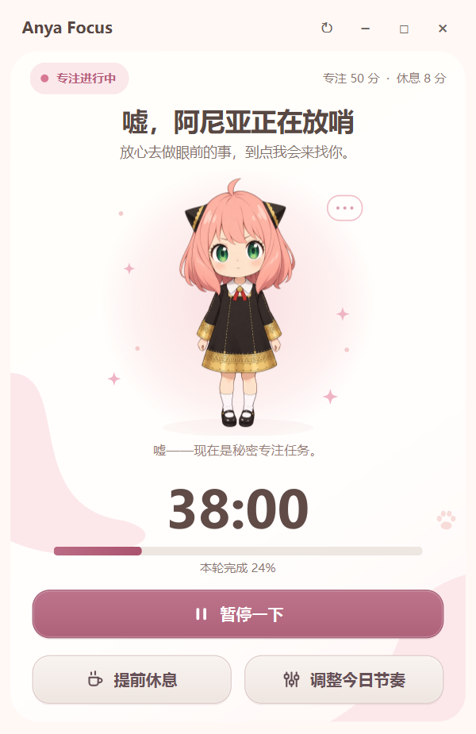
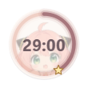
小小一只，PERSONAL TOOL · AI COLLABORATION
认真专注，也要被提醒着好好休息。
我常常把休息推迟到“忙完这一点再说”，然后又多坐了很久。于是，我把这个日常困扰做成了一个有 Anya 陪伴的桌面工具：工作时安静计时，到点后温柔提醒；当我一再选择“稍后”，她也会逐渐认真起来。
它最重要的设计，是给“再等五分钟”一个边界。连续三次延长之后，工具会收起继续推迟的选项，先带我完成一轮休息。起身、伸展、喝水、安静充电，每个阶段都有对应的表情与动作，让休息也成为体验的一部分。
从自己的需求出发，设计规则，借助 Codex 等 AI 工具实现，再通过测试与持续自用检查体验。这个工具也曾交给身边的同学和朋友试用，收到正向反馈。
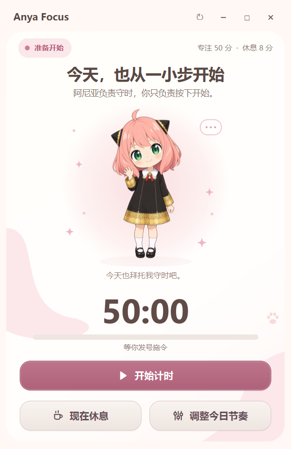
STEP 01 / FOCUS
设置好自己的工作与休息节奏，从一次计时开始。准备页的 Anya 会用不同姿态陪伴等待，让打开工具这件小事也有一点期待。
准备好了，就从眼前这一件事开始。
STEP 02 / FOCUS
计时开始后，界面清楚呈现剩余时间和本轮进度。需要时可以暂停或提前休息；也可以让小巧的悬浮圆环留在桌面，把更多空间交还给正在做的事。
陪伴感留在一旁，注意力留给眼前。
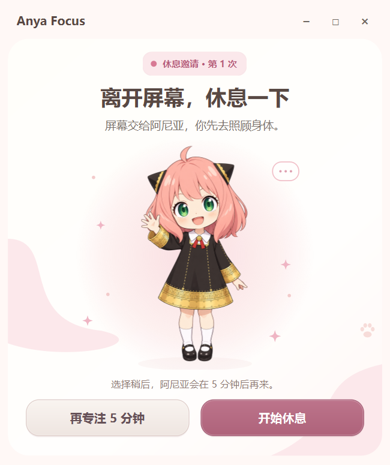
STEP 03 / GENTLE REMINDER
专注计时结束，Anya 会邀请你离开屏幕、休息一下。手头确实还差一点时，可以选择“稍后”，给任务留下收尾的余地。
到点了，该照顾一下身体。
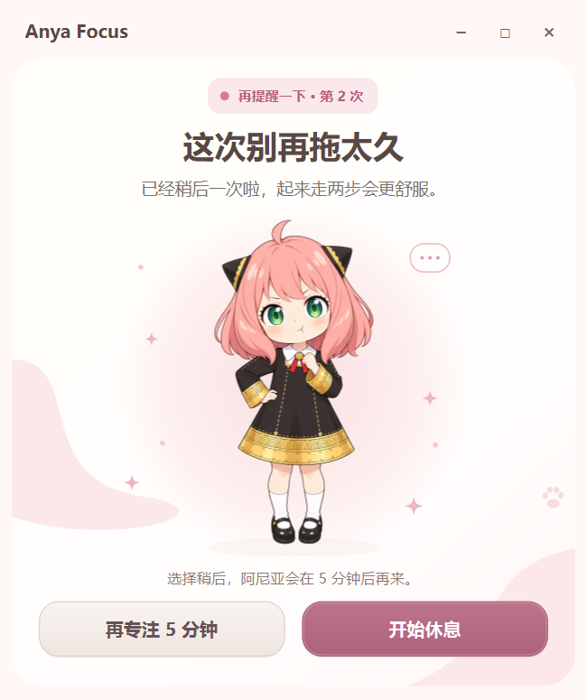
STEP 04 / GENTLE REMINDER
第一次延长后，提醒语气和角色表情一起变化。工具记住了这次推迟，让“再等一会儿”不再成为没有痕迹的选择。
先把这一点收尾，再给自己一点空闲。
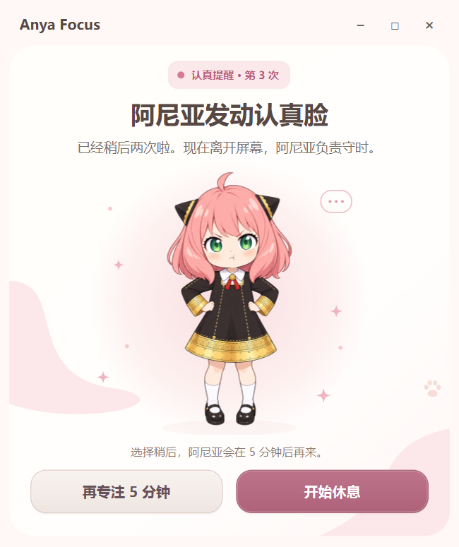
STEP 05 / GENTLE REMINDER
再次推迟，角色变得更认真，提醒也更加明确。第三次“稍后”仍然保留，但这已经是本轮最后一次延长机会。
可以收尾，不能一直往后拖。
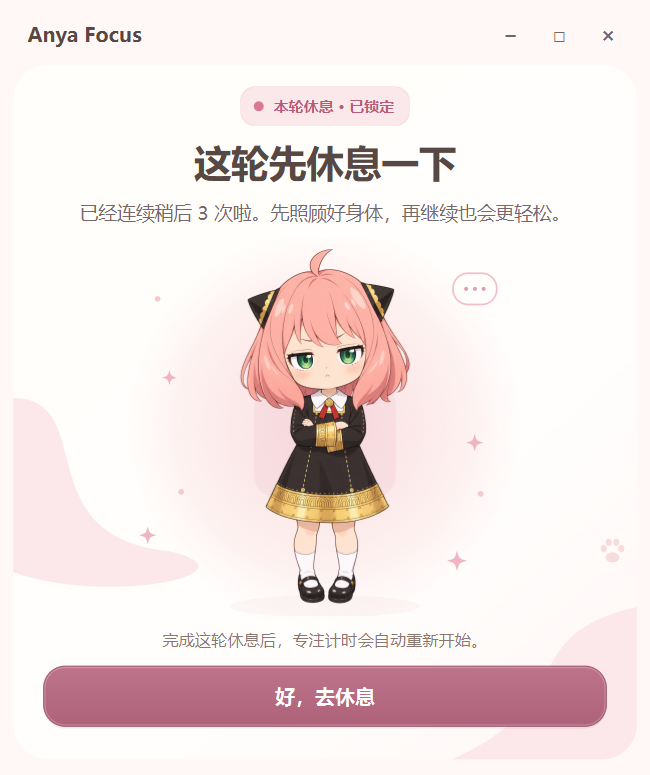
STEP 06 / GENTLE REMINDER
连续选择三次“稍后”后，下一次提醒不再提供延长按钮，只保留进入休息的入口。给反复拖延设一个明确边界，完成这轮休息后再开始新的专注。
温柔可以有很多次，规则也要有边界。
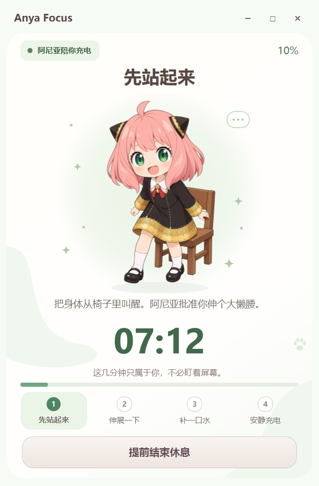
STEP 07 / TAKE A BREAK
进入休息后，倒计时与引导一起出现。Anya 切换为起身动作，提醒你暂时离开坐姿，让休息从一个很小的动作开始。
先起身，换一个姿势，也换一口气。
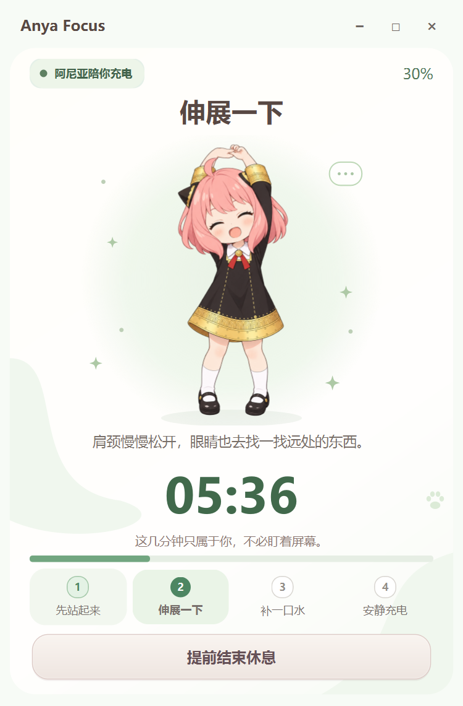
STEP 08 / TAKE A BREAK
休息不只是看着另一块倒计时。角色用伸展动作给出下一步提示，配合清晰的阶段进度，让这几分钟有具体、轻松的去处。
伸个懒腰，暂时松开手头的事情。
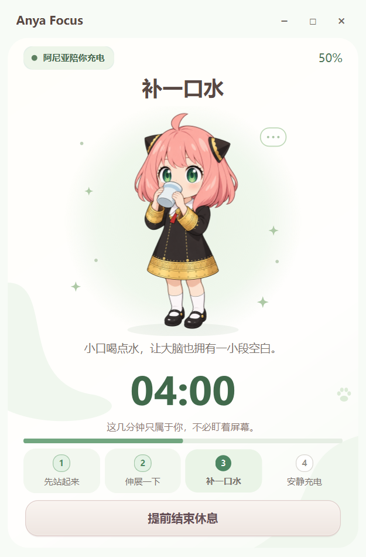
STEP 09 / TAKE A BREAK
喝水阶段，Anya 捧起水杯。倒计时仍然可见，提醒从“该停下来”变成“现在可以做什么”，让放松也有温暖的陪伴。
慢慢喝水，这几分钟属于你。
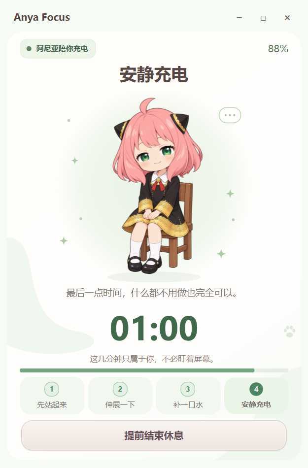
STEP 10 / TAKE A BREAK
临近休息结束，角色切换到安静充电的状态。一次专注、一次真正的休息，再回到新的任务，让工作与放松形成可以持续的节奏。
有认真投入，也有好好恢复。
我负责发现痛点、拆解需求、设计规则并检查使用结果；AI 承担主要代码实现。让需求落地，也对做出来的东西负责。
持续自用，并向身边同学和朋友开放试用。2026 年 9 月 22 日，核心计时与提醒升级相关的 19 项单元测试通过。
06 / EDUCATION & EXPERIENCE
每一段经历，都留下下一步的积累。
环境工程 · 本科
建立理解工程问题、整理资料与严谨表达的基础。本科期间积极投身公益募捐与校园志愿服务，并随团队在“互联网+”创新创业大赛中获得银奖。
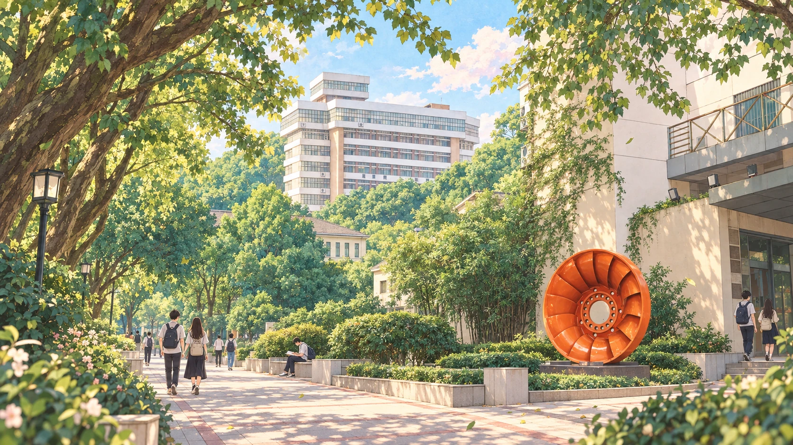
资源与环境（物理海洋） · 硕士
在物理海洋研究中推进长时间序列分析与模型验证。日常深度借助 Codex 等 AI 工具辅助 Python 脚本编写、数据批量清洗与异常排查，把 AI 协作融入科研日常。
INTERNSHIP / 2025.09 — 2026.06
把研究中的耐心，带进有时限的协作任务。
实习期间，我一边跟随学校老师推进硕士课题，开展数据处理、结果分析与科研绘图；一边参与年度极地气候变化材料制作，将数据、图件和文字衔接成可以交接的内容。
在约一天的任务周期内，负责南北极相关站点数据的下载、处理、趋势可视化、图件复刻与对应章节撰写。借助 AI 辅助脚本生成和排查，先用小样例试运行，再对照结果与异常检查，完成本人负责板块的交付。
这段经历让我更重视：在时间有限时拆清任务，在协作中说清结果，把检查留在交付之前。
07 / OFFLINE MOMENTS
留一点空间给运动与放松。
在运动中释放压力，把精力慢慢找回来。
让注意力回到呼吸与节奏，给忙碌的脑袋放个假。
好好运动，也好好放松。留一点时间给自己，才能带着更好的状态，重新投入生活与工作。